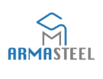

Two 5-axis welding robots — 16 meters of linear travel
Complete design, 3D modeling, fabrication, and programming of two 5-axis welding robots with real-time infrared tracking and 16 meters of linear travel for Armasteel.
The Industrial Challenge
Armasteel needed an automated system to make continuous, uniform welds on long steel profiles up to 16 meters, while maintaining consistency across different welding angles.
Deployed Engineering & Method
RAFI Robotiques et Machineries designed a 5-axis robotic system mounted on a 16-meter linear rail. Infrared sensors adjust the feed speed in real time to match the welding angle. We also developed a robust, easy-to-use operator interface.
Measurable Result
The two robots provide a 16-meter reach and produce high-quality welds without manual rework. The system increases productivity and can be used for heavy steel structures, shipbuilding, and automotive manufacturing.